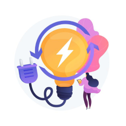

Transformation digitale
Mes connaissances sur ce sujet
Avant la COVID beaucoup d’entreprises n’utilisaient pas le digital.
- Korian a avancé son plan de digitalisation.
- Des services comme Doctolib/Quare ont commencé à se démocratiser chez les médecins
- Le télétravail avant covid n’était possible dans toutes les entreprises.
Le digital a permis l’arrivée d’un nouveau type d’entreprises appelées startups. Des entreprises dont le modèle économique est scalable et ayant une croissance forte.

Mes atouts dans ce domaine
Au cours de mon cursus j’ai travaillé sur 8 problématiques digitales d’entreprises comme :
- des stratégies de génération de leads
- travailler autour des incubateurs à impact
- L’e-santé avant pendant et après une épidémie
- sur le lien social en ehpad en periode COVID...
Ces projets m’ont permis d’acquerir de nouvelles compétences comme :
- faire un user journey
- stakeholder maps
- Empatys maps
Comment se déroulent ces projets ?
Les projets étaient divisés en 3 étapes :
- Découverte : Avec des discussions qualitatives nous en apprenons plus sur la cible du projet, ses freins, ses buts.
- La phase de conception : Nous concevons des maquettes répondant au problème identifié
- Intégration : Les techs développement les maquettes créés.
Durant ces projets j'ai pu travailler sur ces trois parties.
Mon profil